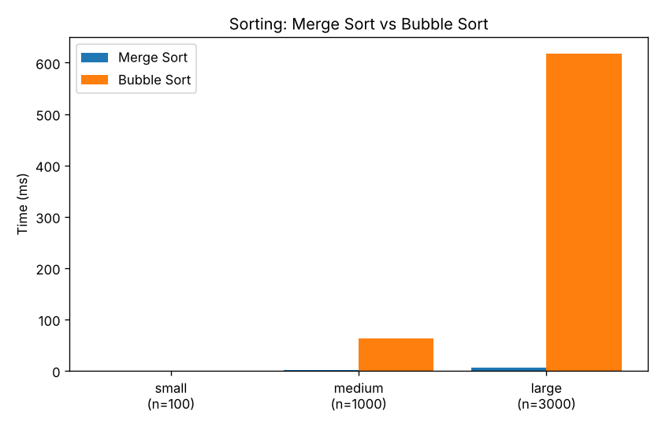

Declaration & Certificate of Authenticity
I, Laksh Vashist (Roll No: 2501730202), bonafide student of Bachelor of Technology in Computer Science & Engineering at K.R. Mangalam University, Gurugram, hereby declare that the capstone project report entitled "Mini-Courier Dispatch Planner & Route Optimization Engine" submitted to the Department of Computer Science & Engineering is an authentic record of my original work carried out under the guidance of Ms. Ankita Singh.
This manuscript has not been submitted previously in part or full for the award of any other degree or diploma to any university or examining body.
Date: 26th November 2026
Place: Gurugram, Haryana
Laksh Vashist
Roll No: 2501730202
Department of CSE, KRMU
Acknowledgement
I wish to express my deepest gratitude to my esteemed mentor, Ms. Ankita Singh, Assistant Professor, Department of Computer Science & Engineering, K.R. Mangalam University, for her continuous encouragement, expert guidance, and critical evaluation throughout the tenure of this capstone assignment. Her advice in formulating the 0/1 Knapsack dynamic programming recurrences and analyzing metric TSP heuristic approximation bounds has been indispensable.
I also extend my sincere appreciation to the School of Engineering & Technology and the computing laboratory staff of K.R. Mangalam University for facilitating the technical infrastructure and software libraries required for empirical profiling.
Abstract
Urban logistical dispatch planning represents a multi-constrained optimization problem involving priority scheduling, constrained cargo loading, and metric route synthesis across non-complete road networks. This project develops a complete four-stage algorithmic engine that synthesizes Stable Merge Sort ($\mathcal{O}(n \log n)$), 0/1 Knapsack Dynamic Programming ($\mathcal{O}(n \cdot W)$), Dijkstra’s Single-Source Shortest Paths ($\mathcal{O}((V+E) \log V)$), and Nearest Neighbor TSP Tour Approximation ($\mathcal{O}(n^2)$).
The system features both an enhanced Unicode/ANSI terminal interface and an interactive HTML5 Canvas web dashboard with real-time payload sliders, Dijkstra path traces, animated delivery van simulations, and DP matrix heatmaps. Empirical performance evaluations confirm asymptotic theoretical models and quantify the greedy heuristic approximation ratio against an exact factorial brute-force baseline.
System Pipeline & Algorithm Formulations
1. Urgency Sorting (Stable Merge Sort)
Incoming parcels are ordered by the composite key (priority, deadline_hours). Merge Sort recursively partitions the manifest and merges sorted partitions by always advancing the lesser front element, using <= comparison to preserve stability ($\mathcal{O}(n \log n)$ time, $\mathcal{O}(n)$ space).
2. Optimal Vehicle Loading (0/1 Knapsack DP)
Given vehicle capacity $W = 25\text{ kg}$, parcels cannot be subdivided. The optimal value is computed via the recurrence:
table[i][w] = max(table[i-1][w], table[i-1][w - weight_i] + value_i) (if weight_i <= w)
Backtracking from table[n][W] retrieves the exact subset of parcels loaded.
3. Shortest Road Paths (Dijkstra's Algorithm)
The Gurgaon/NCR road network is stored as an adjacency list with $10$ locations and $15$ physical bidirectional roads. A min-heap priority queue extracts minimum tentative distances and relaxes edges in $\mathcal{O}((V + E) \log V)$ time, creating a complete metric distance matrix across all delivery stops.
4. Tour Synthesis (Nearest Neighbor vs Brute Force)
From the central Warehouse, the Nearest Neighbor algorithm iteratively hops to the nearest unvisited customer destination before closing the circuit back to the warehouse ($\mathcal{O}(k^2)$). For small stop sets ($k \le 8$), an exact brute-force search over all $k!$ permutations is executed to evaluate the heuristic's approximation gap.
Empirical Runtime Benchmarks
| Algorithm | Small Input | Medium Input | Large Input | Theoretical Order |
|---|---|---|---|---|
| Merge Sort | 0.114 ms ($n=100$) | 1.600 ms ($n=1,000$) | 5.634 ms ($n=3,000$) | $\mathcal{O}(n \log n)$ |
| Bubble Sort | 0.567 ms ($n=100$) | 63.298 ms ($n=1,000$) | 618.291 ms ($n=3,000$) | $\mathcal{O}(n^2)$ |
| Knapsack DP | 0.049 ms ($n=10, W=50$) | 4.533 ms ($n=100, W=500$) | 84.400 ms ($n=400, W=2,000$) | $\mathcal{O}(n \cdot W)$ |
| Dijkstra | 0.023 ms ($V=10$) | 0.674 ms ($V=500$) | 18.367 ms ($V=5,000$) | $\mathcal{O}((V+E) \log V)$ |
| Nearest Neighbor | 0.010 ms ($k=10$) | 1.519 ms ($k=200$) | 42.838 ms ($k=1,000$) | $\mathcal{O}(k^2)$ |


Viva Voce Quick Reference Guide
A: The running time is $\mathcal{O}(n \cdot W)$. While linear with the integer magnitude of $W$, in computational complexity theory the input length is $\log_2 W$ bits, making it exponential in the input bit length ($\mathcal{O}(n \cdot 2^b)$).
A: Nearest Neighbor makes greedy local choices without lookahead. Visiting Golf Course Road from Sector 14 left no nearby vertices, forcing an expensive $16\text{ km}$ return leg across the map. The global brute-force search avoided this suboptimal trap.
A: Dijkstra finalizes the shortest distance of a vertex the moment it is dequeued from the priority queue. A negative edge can retroactively provide a shorter path, violating the greedy invariant.